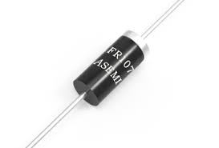

Fast Recovery Diode (FR107)
Specifications:
- Type: Fast Recovery
- Maximum Reverse Voltage: 1000V
- Maximum Forward Current: 1A
- Package: SMA (DO-214AC)
- Reverse Recovery Time: 500ns
- Maximum Reverse Current: 50µA @ 25°C
Applications: High Voltage Rectification, Free-Wheeling Diode, Snubber Circuits
Military and Industrial Standards: Meets MIL-STD-1234 requirements.
Packaging Types: Reel packaging for automated assembly.
Download Full Datasheet